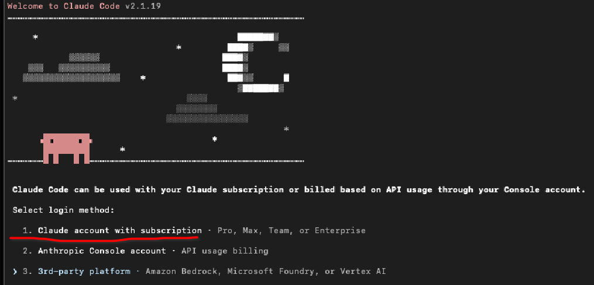
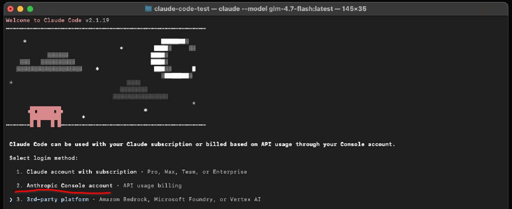
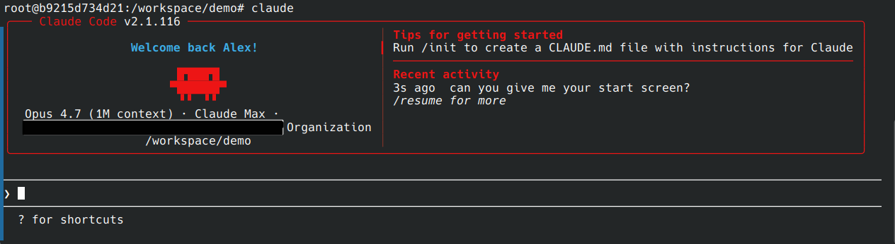

Getting Started with Claude Code
An AI coding agent for economics research. Day 1
Workshop Overview
| Part | Topic | Minutes |
|---|---|---|
| 0 | Why this workshop | 5 |
| 1 | Chatbot vs agent: felt difference | 10 |
| · | Live demo | 5 |
| 2 | The ladder of AI coding tools | 5 |
| 3 | Mental models | 10 |
| 4 | Meet Claude Code | 5 |
| 5 | Setup: Max subscription or API tokens | 15 |
| 6 | Basic interaction loop | 15 |
| 7–9 | CLAUDE.md · Essentials · Pitfalls | 25 |
| · | Hands-on: tutor-guided messy-project session | self-paced |
Part 0: Why this workshop
Two reasons
Speed. Tasks that used to fill a day (reorganising a folder, drafting a README, writing a download script, styling a figure) compress to minutes. You still make the research decisions. The agent does the typing.
Calibration. Your adviser, future co-authors, and the researchers whose papers you read will all be using these tools. You need to know what they can and can’t do, and where they cut corners.
Two ways to pay. A Claude Max subscription (flat monthly, unlimited within reason) or API tokens on an Anthropic key (pay-as-you-go, about $0.10–$0.50 per session). We set up both paths in Part 5.
Part 1: Chatbot vs agent
Same task, two worlds
An agent is not a smarter chatbot.
The chatbot is locked inside a text box. The agent has hands: it reads files, runs commands, writes code, closes its own error loops.
The next four slides show the same research task under both tools, side by side.
Task 1. “What packages does this project use?”
💬 Chatbot
- Open script 1, select all, copy.
- Paste: "list every
library()". - Repeat 6× for other scripts.
- Merge lists by hand.
- Turn bullets into R code.
~10 min.
🛠 Agent (Claude Code)
folder, list every library()
call. Deduplicate. Write as
a single 00_setup.R.
~20 sec. A working script.
The agent opens your files and writes new ones. The chatbot cannot.
Task 2. “This script broke. Fix it.”
💬 Chatbot
- Run, get error. Copy traceback.
- Paste. Get suggestion.
- Apply. Re-run. New error.
- Paste again.
- Repeat.
You're a courier.
🛠 Agent
fix anything that breaks.
[agent runs, reads error,
patches, re-runs, reports]
Agent closes its own loop.
The agent sees its own output. The chatbot needs you to paste.
Task 3. Bulk rewrite, and Task 4. Three plot styles
🔁 Bulk rewrite
read.csv( with
readr::read_csv(.
Commit when done.
Done, with a revertible commit. No sed, no regex pain.
🎨 Cheap experimentation
plot_iris.R: minimal,
Healy, Economist. Save as
PDFs in figures/.
Three PDFs. Compare side by side. Pick one.
When is an agent actually worth it?
| ✅ Big win | ❌ Keep for yourself |
|---|---|
| Inventory or audit an unknown folder | Novel research ideas |
| Bulk rewrites (rename, reformat, port) | Non-trivial identification strategy |
| Run, fail, fix loops | Final writing (the voice matters) |
| Generate and compare variants | Sensitive data (IRB, PII) |
| Glue work (download, parse, plot) |
Agents win on the paperwork around the research, not the research itself.
Play with it, seriously
You won’t get the felt difference from reading. Open a terminal, start a session, try things like:
- Download monthly BLS employment data for one US state and plot it.
- Merge three scripts from your last seminar paper into one.
- Draft a short literature-review summary of a paper for your thesis.
- Port a
data.tablepipeline todplyr. - Write a LaTeX beamer deck from the outline in
notes.md.
A few cents of tokens (or five minutes of a Max session) buys a lot of trying.
Live demo: 3 minutes
Watch the loop
Six prompts. Empty folder. Claude Sonnet.
$ mkdir ~/demo && cd ~/demo
$ claude
▸ Write plot_iris.R: load iris, plot sepal length by species.
▸ Run Rscript plot_iris.R.
▸ Restyle it following Kieran Healy's ggplot2 best practices.
▸ Save to figures/iris.pdf and figures/iris.png at 300 DPI.
▸ /costWatch: diff previews, permission prompts, /cost reporting tokens used.
Presenter: run this live. Pre-record a GIF as fallback.
Before the session, either claude login in advance (Max) or export ANTHROPIC_API_KEY=... in the terminal you’ll project.
mkdir ~/demo && cd ~/democlaude- “Write plot_iris.R: load iris, plot sepal length by species.” Accept diff.
- “Run Rscript plot_iris.R.” Approve the bash command; output returns to chat.
- “Restyle it following Kieran Healy’s ggplot2 best practices.” Accept.
- “Save to figures/iris.pdf and figures/iris.png at 300 DPI. Create directory if needed.” Approve;
ls figures/. /cost. Typically a few cents on API, or “uses Max subscription” if logged in.
If it breaks: narrate the failure honestly. That IS the lesson (Part 9: failure as part of the loop).
What just happened
- The agent read an empty folder and wrote a new file.
- It ran the script. The output returned to its own context.
- It iterated: restyled, saved, without re-stating the goal.
- You saw the cost (tokens on API, or a Max session summary).
That was Level 3. Next: the ladder.
Part 2: The ladder
If you tried Copilot and weren’t impressed
| Level | What it is |
|---|---|
| 0 | Copy-paste between ChatGPT and your editor |
| 1 | IDE autocomplete (Copilot) |
| 2 | IDE-based agent (Cursor, Continue) |
| 3 | Terminal agent (Claude Code, Aider, Codex, Gemini CLI). TODAY. |
| 4 | Orchestrated agents: headless CI, multi-agent review |
| 5 | Long-horizon autonomy: task, walk away, PR |
…you were at Level 1. Level 3 is a different tool.
Part 3: Mental models
An RA that lives on your computer
Not a search engine. Not a chatbot.
A competent but junior RA with a terminal open on your project.
- You give instructions.
- It works.
- You verify.
If you’d hire an RA without checking their first output, you’re hiring wrong. The agent is no different.
You’re not having a conversation
You are passing a very long document back and forth.
Each turn, the model receives:
- the entire prior conversation
- the files you added
- a repo map
- your new message
Up to 200k or 1M tokens. Sounds like a lot. Fills up faster than you’d think.
Context degradation: the single most important idea
As the document grows, performance drops. The agent forgets rules, makes sloppier edits, gives foggy summaries.
Fix it with session hygiene, not a bigger context:
/clearwhen switching topics/compactto compress a long session and keep going- Break big tasks into several short sessions
- Put decisions in a file the agent re-reads, not only in chat
The basic loop
- Instruct. Tell the agent what you want.
- Read the diff. Claude Code shows you exactly what will change.
- Approve or cancel. Accept the diff, or hit Esc and re-prompt.
- Iterate. Refine in the next message.
Most of the work is in step 4.
Part 4: Meet Claude Code
The tool
Claude Code is Anthropic’s terminal-native coding agent.
- Runs in any terminal (macOS / Linux / WSL / inside Docker).
- Reads and writes files in your project.
- Runs shell commands (asks first by default).
- Uses Claude Opus / Sonnet / Haiku; you pick per task.
- Reads a
CLAUDE.mdbriefing file on startup (see Part 7). - Has built-in
/plan(draft first, act second),/init,/compact,/cost.
We use Claude Code for the rest of today and all of Day 2.
Two ways to pay
💳 Claude Max subscription
- Flat monthly fee (Max 5×, 20×).
- No per-token counting.
- Generous for heavy use.
- Sign in with
claude login.
🎟 Anthropic API tokens
- Pay-as-you-go per-token.
- Small budget (\$5) covers workshop.
/costshows spend in real time.export ANTHROPIC_API_KEY=...
Either path works today. If you don’t already have Max, start with $5 in API credits.
Want other models (GPT-5, DeepSeek, Gemini)?
Claude Code uses Claude. For other model families, Aider + OpenRouter is the flexible alternative.
We don’t teach it in the main flow, but the Day 2 tutorial appendix has a full setup: one API key, ~300 models, per-key spend caps.
That setup is useful for:
- comparing models on the same task,
- cheap warm-ups on free-tier models (Qwen Coder, DeepSeek),
- the architect + editor split (reasoner plans, cheap model types).
Part 5: Setup
Track A. Claude Max (flat subscription)
- Go to claude.ai, sign in, open Settings → Plan.
- Pick Max 5× or Max 20×. Activate.
- Open a terminal (or enter the workshop Docker container).
- Run:
$ claude login # opens browser, OAuth with claude.ai $ claude # first session

Track B. API tokens (pay-as-you-go)
- Go to console.anthropic.com, sign up, add \$5 credit.
- Workspaces → Keys → Create. Name it
workshop-day1, set a spend cap. - Copy the key (shown once). Starts with
sk-ant-.... - Export and run:
$ export ANTHROPIC_API_KEY=sk-ant-... $ claude ▸ /cost # watch spend per message

First run: what you’ll see

The prompt shows ▸, the working directory, and a permission indicator. First-time shell commands trigger an approval prompt. Type /help for all built-in commands.
Part 6: Basic loop
Four prompt patterns
| # | Pattern | One-liner |
|---|---|---|
| 1 | Vague start, then iterate | State the goal loosely. Let the agent ask. Refine. |
| 2 | Scripts, not commands | Ask for plot_mtcars.R, never “make a plot”. |
| 3 | Style by reference | “Follow Kieran Healy’s ggplot2 best practices.” |
| 4 | Small iterations | Three narrow prompts beat one monster prompt. |
The warm-up: now you try
Same four patterns, a different dataset. Your hands on the keyboard.
$ mkdir ~/warmup && cd ~/warmup
$ claude
▸ Load mtcars, plot mpg vs weight coloured by cyl.
Write as plot_mtcars.R.
▸ Run Rscript plot_mtcars.R.
▸ Restyle following Kieran Healy's ggplot2 best practices.
▸ Save as figures/mpg_vs_weight.pdf and .png at 300 DPI.
▸ /costThree small rounds, one cost check. That’s the job.
Plan first for anything non-trivial
Type /plan, then your prompt. Claude Code reads the relevant files, drafts a numbered step-by-step plan, and waits for your approval before touching anything.
▸ /plan
▸ Analyse this folder and plan how to turn it into an
AER-compliant replication package.
[agent reads files, drafts plan, waits for OK]You can approve (“looks good, proceed”), steer (“skip step 3, add a robustness check”), or reject outright.
Part 7: CLAUDE.md
One briefing file, many agents
| Agent | Reads |
|---|---|
| Claude Code | CLAUDE.md |
| Aider | CONVENTIONS.md |
| Gemini CLI | GEMINI.md |
| Codex CLI | AGENTS.md |
Same content, different filename. cp CLAUDE.md CONVENTIONS.md literally works.
The file is a briefing, not a config.
Anatomy
# Project name
## Mission one paragraph: what is the job?
## Principles numbered non-negotiable rules
## Structure expected directory tree
## Technical specs packages, output formats
## Don'ts what must never happen
## Protocol what to do when stuckMeta-move: draft it with a chatbot on claude.ai, refine in CLAUDE.md.
/init bootstraps the first draft
$ cd ~/my_project $ claude ▸ /init
Claude Code scans the repo, opens a sample of files, and writes a CLAUDE.md in the project root. Treat it as a first draft; edit to add your domain rules.
Part 8: Claude Code essentials
Slash commands
| Command | Use |
|---|---|
/help |
list all built-in commands |
/init |
auto-draft a CLAUDE.md |
/plan |
enter planning mode |
/compact |
compress the conversation to free context |
/clear |
clear history, keep files |
/model |
switch opus / sonnet / haiku |
/cost |
API spend this session (or “uses Max”) |
Permission modes
Default
Asks before
every shell command
Allow-list
Pre-approve patterns
in settings.json
Skip all
--dangerously-
skip-permissions
Inside Docker, "skip all" is reasonable. The container is your sandbox; the host is untouched.
Model choice: pick the tool for the job
| Task | Good choice |
|---|---|
| Small edits, tight loops | Haiku (fastest, cheapest) |
| Most everyday refactors | Sonnet (default for today) |
| Deep planning, hard reasoning | Opus for /plan, then switch |
Switch mid-session: /model sonnet / /model haiku / /model opus.
On Max, models are included. On API, check /cost after every few messages.
Part 9: Pitfalls
The ones that bite (1 of 2)
- Vague where you should be precise. State file, format, constraints.
- Context degradation.
/clearbetween topics; hand state off via files. - Arguing with the model. Stop, hit Esc, change the prompt.
- Too many files pulled in. Only reference what you’re editing; let the repo map do the rest.
The ones that bite (2 of 2)
- Permission fatigue. Build an allow-list once; don’t click “yes” for every
ls. - Trusting without checking. Treat every output like an RA’s first draft.
- Sensitive data. If you wouldn’t put it on Dropbox, don’t put it in front of the agent.
- Assuming cloud execution. The agent runs locally; R, Python, tools must be installed.
Failure is part of the story
▸ Download homeownership rates by age. Write as download_data.py.
agent: trying FRED... no age-disaggregated series...
agent: switching to Census Bureau...
! Error: 403 Forbidden
agent: bot-blocked, adding User-Agent header...
✓ data downloaded, 1,416 rows savedA 403 isn’t workshop failure. It’s how the tool looks in real use. The loop absorbs it.
Your turn: tutor mode
Mini-exercise on the messy project
🚀 Launch the tutor inside the Docker container:
$ git clone https://github.com/AlexRieber/Workshops.git ~/W $ cd ~/W/AI_Agents/messy_project $ cp ~/W/Getting_Started_Agents/Tutorial/TUTOR.md . $ claude --dangerously-skip-permissions ▸ Read TUTOR.md and act as my tutor.
📋 Five steps the tutor walks you through:
- Orient. What's here? What looks off?
- Draft
CLAUDE.md(never touch data). - Draft
README.mdfrom the R scripts. - Build
00_setup.Rthat loads every package. - Run
Rscript 00_setup.R, check/cost.
Prefer doing it by hand? Tutorial Part 11 has the manual walk-through. Don't attempt the full package today; that's Day 2.
What you leave with
- Claude Code installed and authenticated (Max or API).
- Mental model: RA plus long document plus context degrades.
- Four prompt patterns you will reuse every day.
- A CLAUDE.md of your own.
- Felt sense of cost, and an airbag.
Next: Day 2
AI Agents. Day 2:
Same messy project. Full AER-compliant replication package. Claude Code end-to-end, with hooks, custom skills, and the referee-2 pattern.
Resources
| Claude Code docs | code.claude.com/docs |
| Anthropic Console | console.anthropic.com |
| claude.ai plans | claude.ai/settings/plans |
| Paul Goldsmith-Pinkham on Claude Code | part 1 · part 2 |
| Tutor pattern | earendil-works/pi-tutorial |
| Day 2 workshop | AER-compliant replication package |
| Workshop repo | AlexRieber/Workshops |